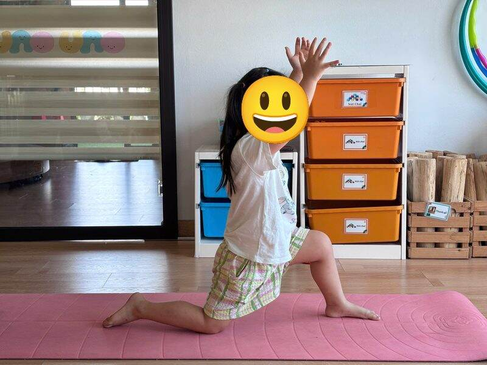

Chủ đề 51 · Cổ tích thế giới
Ba chú heo con và Rùa với Thỏ
🌟 Bài học trong câu chuyện
Giới luật yoga: Tapas – Kiên trì, cố gắng. Bé không bỏ cuộc, thử lại từng chút một.
Kỹ năng sống: Làm việc cẩn thận, kiên trì, không chủ quan.
1. Khởi động (2 phút)
Cả lớp ngồi xếp bằng thành vòng tròn. Cùng thở 3 hơi thở bông hoa: hít vào bằng mũi như ngửi hoa, thở ra bằng miệng thật chậm. Chắp tay trước ngực và chào nhau: “Namaste, chào các bạn!”
2. Câu chuyện: Ba chú heo con và Rùa với Thỏ (đọc cho bé nghe, 4 phút)
Cô đọc trọn câu chuyện cho bé nghe trước. Sau đó cô kể lại từng đoạn ngắn và cả lớp cùng tập 10 tư thế ở phần bên dưới.
Hôm nay cô kể hai câu chuyện nổi tiếng trên thế giới.
Chuyện thứ nhất là Ba chú heo con. Ba anh em heo mỗi chú xây một ngôi nhà. Heo anh xây nhà bằng rơm, xong ngay để đi chơi. Heo thứ hai xây nhà bằng gỗ, cũng nhanh lắm. Heo út chăm chỉ xây nhà bằng gạch, xây mãi, xây mãi, mệt nhưng không bỏ dở.
Chó Sói đến, thổi "phù phù": nhà rơm đổ, nhà gỗ đổ. Hai anh heo chạy sang nhà gạch của em. Sói thổi mãi, thổi mãi, nhà gạch vẫn đứng vững. Ba chú heo an toàn, lăn ra cười vui.
Chuyện thứ hai là Rùa và Thỏ. Thỏ chạy rất nhanh nên hay chê Rùa chậm. Rùa thách Thỏ chạy thi. Thỏ phóng vụt đi, bỏ xa Rùa. Thấy Rùa còn ở tít phía sau, Thỏ nằm ngủ dưới gốc cây trong rừng.
Rùa bò chậm, nhưng không dừng lại một giây nào. Từng bước, từng bước, Rùa vượt qua chỗ Thỏ đang ngủ, cao dần lên đỉnh đồi, gần đến đích. Thỏ tỉnh dậy, chạy thật nhanh, nhưng đã muộn. Rùa về đích trước! Muông thú vỗ tay. Chậm mà chắc, kiên trì thì sẽ thành công.
3. Kể lại và tập 10 tư thế (6 phút)
-
 1
1Ngôi nhà gạch
🧘 Tư thế Chó úp mặt (Downward Dog)
Lời kể khi tập: Heo út chăm chỉ xây nhà bằng gạch, xây mãi, xây mãi.
Cách làm: Chống hai tay và hai chân xuống thảm, nâng mông lên cao, người thành hình tam giác. Giữ 3 đến 5 nhịp thở.
-
 2
2Chó sói thổi nhà
🧘 Tư thế Sư tử thở (Lion's Breath)
Lời kể khi tập: Chó sói đến thổi "phù phù"! Nhà rơm, nhà gỗ đổ, nhà gạch vẫn vững.
Cách làm: Quỳ gối, hai tay chống xuống thảm trước gối (hoặc đặt trên gối), hít vào bằng mũi, rồi há miệng thè lưỡi thở ra "khàaa" như sư tử. Giữ 3 đến 5 nhịp thở.
-
 3
3Heo con vui vẻ
🧘 Tư thế Em bé vui (Happy Baby)
Lời kể khi tập: Ba chú heo an toàn trong nhà gạch, lăn ra cười vui.
Cách làm: Nằm ngửa, co hai chân lên, tay nắm bàn chân, lắc lư qua lại. Giữ 3 đến 5 nhịp thở.
-
 4
4Thỏ chạy nhanh
🧘 Tư thế Con thỏ (Rabbit)
Lời kể khi tập: Ở khu rừng khác, Thỏ chạy thi với Rùa. Thỏ chạy rất nhanh!
Cách làm: Quỳ gối, cúi đầu chạm thảm, hai tay nắm gót chân, nhẹ nhàng nâng mông lên. Giữ 3 đến 5 nhịp thở.
-
 5
5Rùa chậm mà chắc
🧘 Tư thế Con rùa (Turtle)
Lời kể khi tập: Rùa bò chậm, nhưng không dừng lại.
Cách làm: Ngồi, mở rộng hai gối, luồn tay dưới gối, cúi người như rùa trốn vào mai. Giữ 3 đến 5 nhịp thở.
-
 6
6Rừng cây
🧘 Tư thế Cái cây (Tree)
Lời kể khi tập: Thỏ nghĩ mình chắc thắng, nằm ngủ dưới gốc cây.
Cách làm: Đứng một chân, bàn chân kia đặt vào bắp chân hoặc đùi (không đặt lên đầu gối), hai tay chắp trên đầu. Giữ 3 đến 5 nhịp thở.
-
 7
7Thỏ ngủ quên
🧘 Tư thế Em bé (Child's Pose)
Lời kể khi tập: Thỏ nằm ngủ dưới gốc cây, ngáy khò khò.
Cách làm: Quỳ gối, ngồi lên gót chân, cúi người cho trán chạm thảm, hai tay duỗi ra trước hoặc để xuôi bên người. Giữ 3 đến 5 nhịp thở.
-
🐰Ảnh tư thế đang cập nhật8
Rùa lên đỉnh đồi
🧘 Tư thế Ngọn núi kiễng chân (Tiptoe Mountain)
Lời kể khi tập: Rùa cố gắng từng bước, lên đến đỉnh đồi, gần đích rồi!
Cách làm: Đứng thẳng, kiễng hai gót chân, hai tay vươn cao hết cỡ. Giữ 3 đến 5 nhịp thở.
-

9Thỏ tỉnh dậy chạy
🧘 Tư thế Bước dài hạ gối (Low Lunge)
Lời kể khi tập: Thỏ tỉnh dậy, chạy thật nhanh, nhưng đã muộn.
Cách làm: Một chân bước dài ra trước, gối sau hạ xuống thảm, một hoặc hai tay vươn cao. Giữ 3 đến 5 nhịp thở.
-
 10
10Rùa về đích
🧘 Tư thế Ngôi sao (Star)
Lời kể khi tập: Rùa về đích! Muông thú vỗ tay. Mình dang tay chân thành ngôi sao chiến thắng.
Cách làm: Đứng dang rộng hai chân, hai tay dang ngang thật thẳng, cả người thành ngôi sao năm cánh. Giữ 3 đến 5 nhịp thở.
4. Thư giãn (2 phút)
Các con nằm ngửa, tay chân thả lỏng, nhắm mắt lại. Cô nói nhẹ: “Hít vào thật chậm… thở ra thật chậm… Con nhớ lại câu chuyện vừa rồi, nhớ người bạn mình thích nhất trong truyện. Cơ thể con mềm như bông, nhẹ như mây.” Sau đó các con nghiêng người, từ từ ngồi dậy.
5. Trò chuyện cùng bé (1 phút)
Heo út chăm chỉ xây nhà gạch, Rùa kiên trì không dừng lại. Kiên trì, cố gắng là Tapas.
Cô hỏi các con:
- Vì sao nhà gạch không bị đổ?
- Vì sao Rùa thắng Thỏ?
Kết thúc bằng lời chào “Namaste” và một nụ cười.
Lưu ý cho thầy cô và bố mẹ: Tập trên thảm, không tập ngay sau khi ăn no. Bé chỉ làm tới mức thấy dễ chịu, không ép bé. Tư thế đứng một chân có thể cho bé vịn tường hoặc vịn tay người lớn.